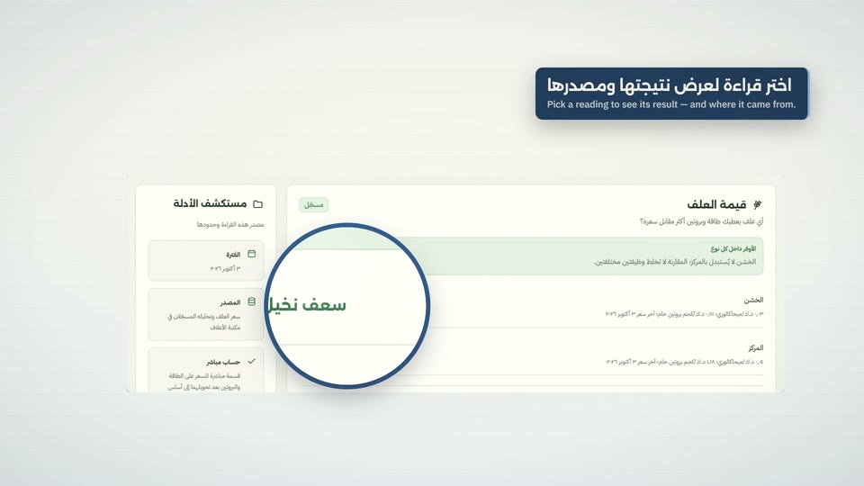
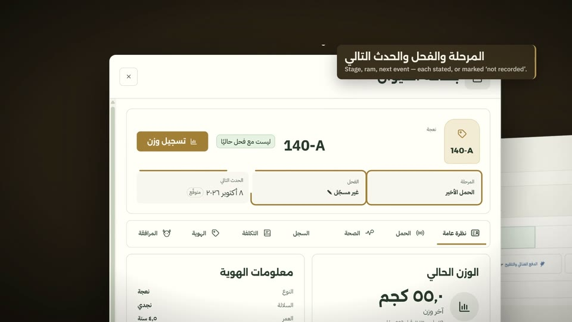
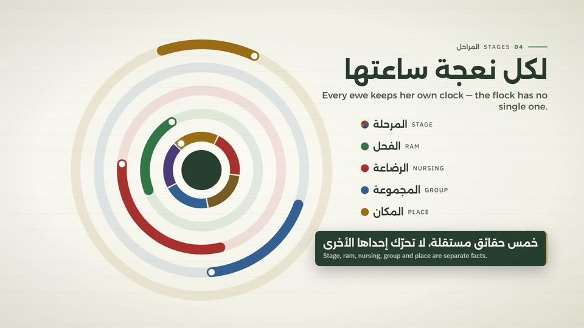
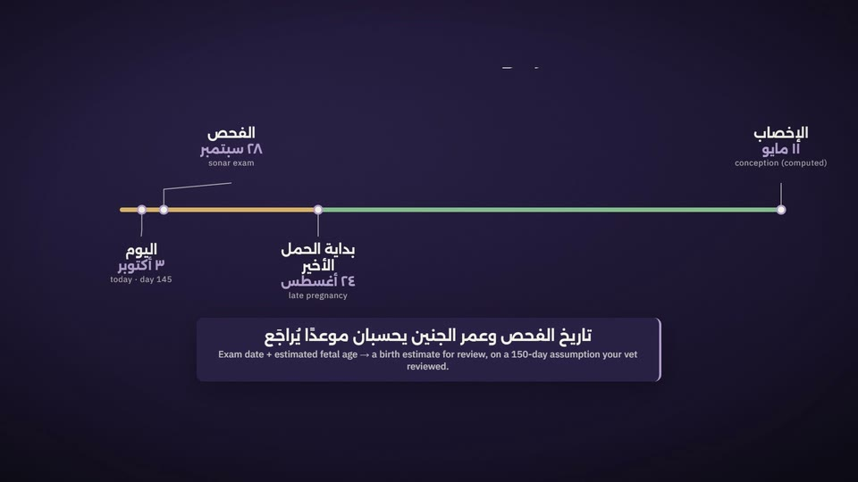
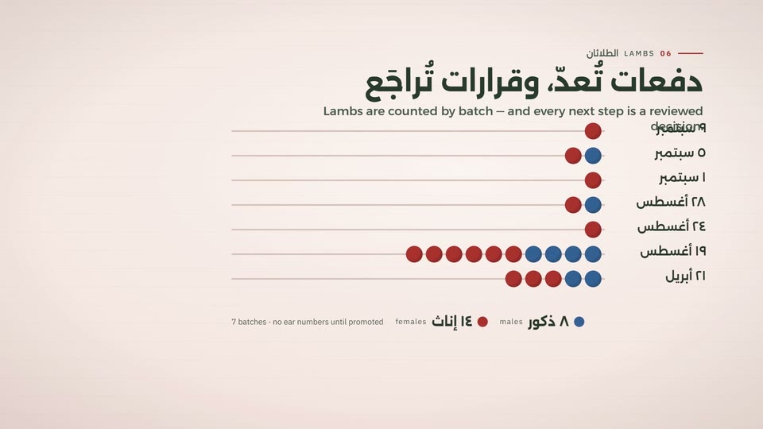
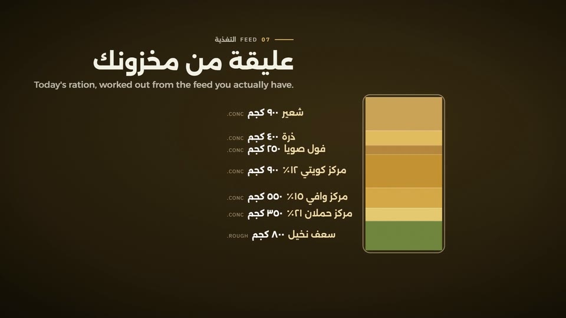
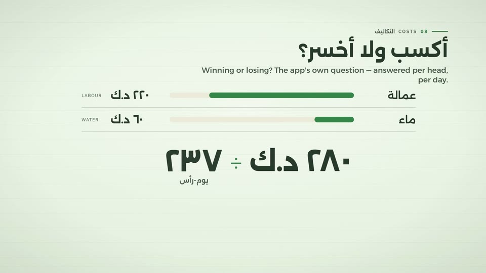
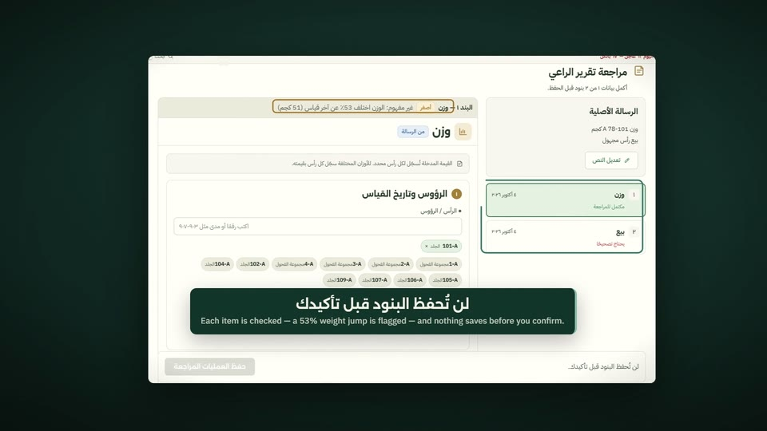
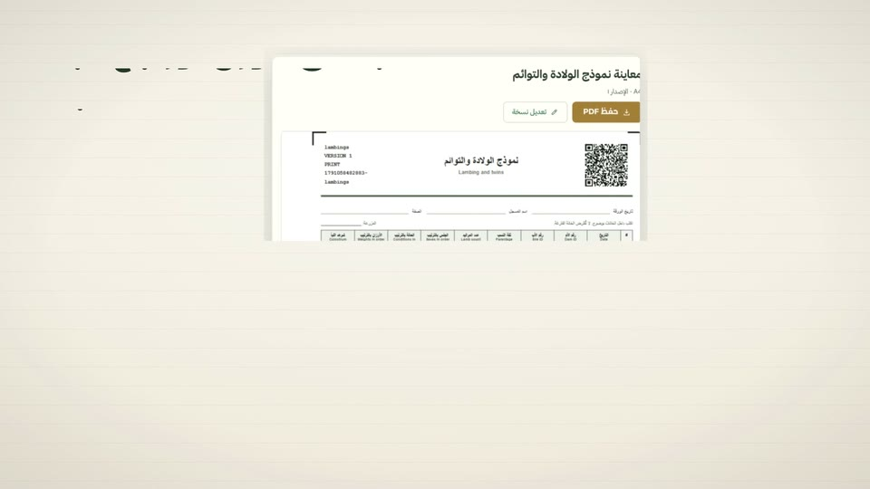
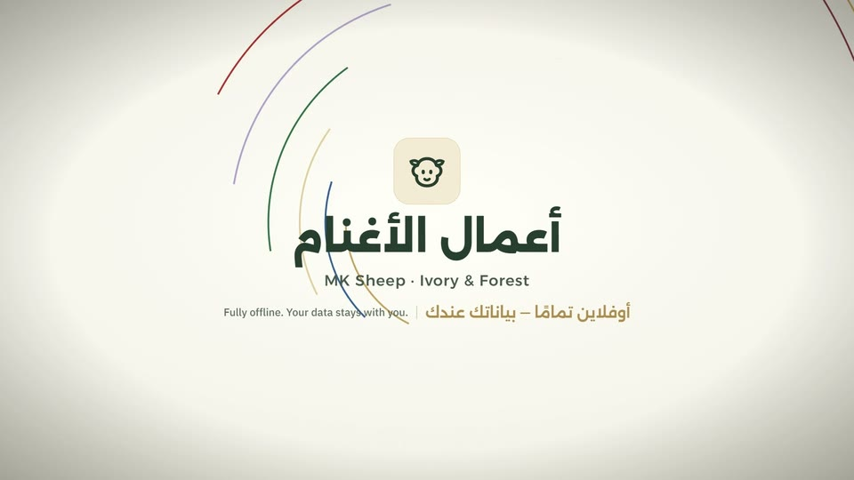

What needs my hand today?
79 sample head condense into the real Home screen: what is late, and the week of expected births.
79 sample head condense into the real Home screen: what is late, and the week of expected births.
A 165-second film of the real, newly built MK Sheep interface — herd, stages, pregnancy evidence, lambs, feed, costs, quick entry, paper forms and the audit trail — on sample farm data.
79 sample head condense into the real Home screen: what is late, and the week of expected births.

The Decision Desk labels every reading recorded or expected, shows its source, and admits gaps.

The register by stage, the animal card, and ear numbers that return as a new generation.

Stage, ram, nursing, group and place stay separate facts; moves are reviewed before they are recorded.

Exam date and estimated fetal age give a birth estimate for review; nothing moves the stage on its own.

Lambs stay counted by birth batch until promoted; sale, fattening or keeping is a reviewed choice.

Today's ration for five groups is worked out from the feed on hand; dispensing stays a separate step.

Costs by category become a cost per head per day, counted from each head's actual days.

A shepherd's message becomes review items with honest flags; typed commands run as one atomic plan.

Printable A4 templates in Arabic with English labels, and an intake that never saves silently.

Who changed what, from where, before and after — and a vet catalogue that invents nothing. Fully offline.